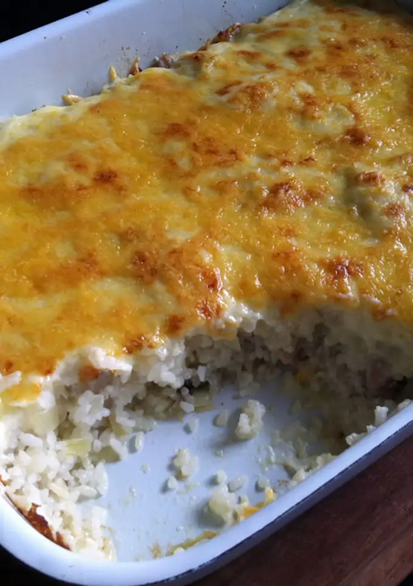

Odin Recipes
Chicken Doria Recipe

So much butter. So much goodness. This dish is a special western-style dish from Japan known for being warm and filling. This recipe uses chicken but you can use any other meat (or non-meat) and get a delicious result!
Recipe from Cookpad.
Ingredients
- Chicken fillets
- Cooked rice
- Unsalted butter
- Oil
- Chopped onion
- Sliced mushrooms
- Salt & Pepper
- Grated cheese
- Plain flour
- Milk
Steps
- Preheat oven to 200 degrees celsius.
- Make white sauce. Heat butter in a saucepan over medium heat until melted and foaming. Add flour and stir until mixture bubbles. Slowly add milk while continuing to stir until sauce boils and thickens. Season with salt and pepper.
- Heat oil in a large pan. Cook chicken, onion, and mushrooms. Season with salt and pepper. Add cooked rice and combine.
- Add some oil to a large ovenproof dish. Place the rice and pour the white sauce over it. Cover with grated cheese. Bake for 20 minutes or until golden.